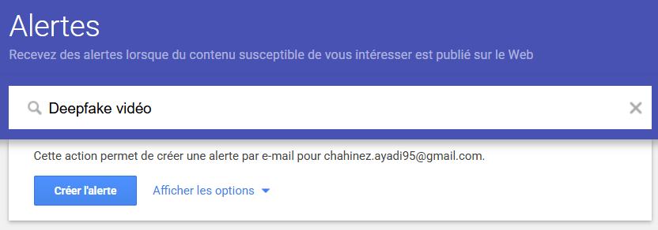

Configuration Google Alerts

Exemples de requêtes (« deepfake video », « fake video detection », « vidéo truquée IA », « deepfake escroquerie ») pour suivre l'actualité des deepfakes vidéo via Google Alertes.
07.
La démocratisation des outils de deepfake vidéo permet aujourd'hui à n'importe qui de fabriquer de fausses vidéos réalistes en quelques clics. Ces contenus sont de plus en plus utilisés pour escroquer, manipuler ou nuire à la réputation de personnes publiques ou privées. Cette veille suit l'actualité autour des deepfakes vidéo pour identifier les nouvelles menaces et les moyens d'y faire face.
Ma veille technologique s'appuie sur plusieurs outils et méthodes :

Exemples de requêtes (« deepfake video », « fake video detection », « vidéo truquée IA », « deepfake escroquerie ») pour suivre l'actualité des deepfakes vidéo via Google Alertes.
La veille technologique permet de surveiller les usages détournés des deepfakes vidéo, d'identifier les nouvelles techniques de falsification et d'adapter les politiques de sécurité.
Anticiper les innovations et rester compétitif dans son domaine d'activité.
Surveillance continue des tendances, innovations et évolutions technologiques.
Prise de décisions éclairées et adaptation stratégique face aux changements.